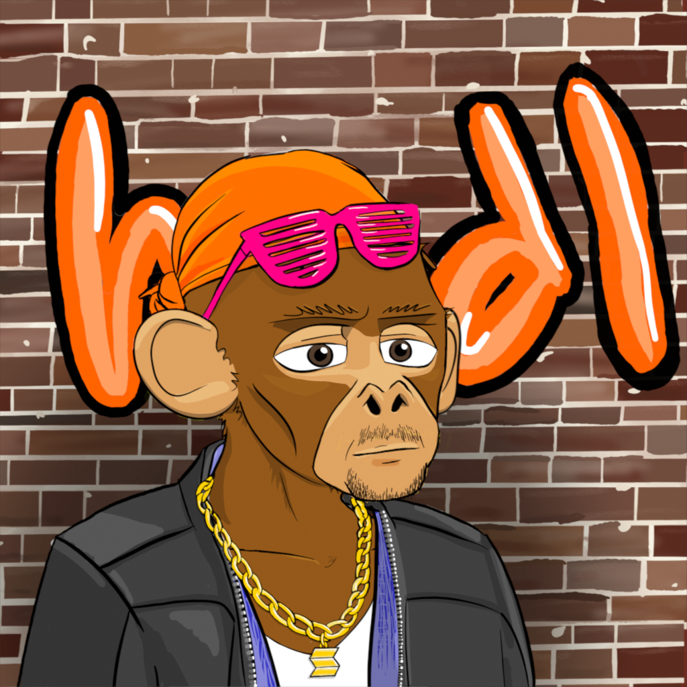

We are creating the first full gangster ape NFT collection
Apes in the HOOD
- CripTo Apes are cool, that’s why most of them have their head covered. The most common tops are the bandanna, bucket hat, and the snap back. Bandanna Apes are cold blooded, which is why they need to cover their head. The bucket hat Apes are a good time because they’re always down for anything. The snap back apes are the coolest in the collection, they keep it 100 wherever they’re at. The Cripto Apes with hair are more confident, making them more rare. The come with black slicked back hair, the old heads come with grey slicked back hair. The rarest OG CripTo Apes come with a shaved head.
- Face tats are a sign of cred in the CripTo Ape community, most Apes don’t have any face tats. The apes with most street cred have a gun tat, this shows they’re not afraid to bring the heat. The Apes with the most church cred has a cross, this shows they’re not afraid to pray. The Apes who’ve gone to therapy have the tears tat, this shows they’re not afraid of self improvement. Apes that have done time have the skull tat, this shows they’re not afraid to catch a case. And the OG Apes have the Monke tat, because they’re proud of where they came from. All tats are uncommon and equally rare.
- Glasses and eyewear are also rare for our apes, most CripTo Apes don’t need them. There are some CripTo Apes that like to flex, for instance our biker/outdoor ape likes to be outdoors and he loves for other people to see it. Our Bono Ape is a huge U2 fan and wants everyone to know how much he stans Bono. The Kanye glasses Ape has a huge Ego and needs these shades so he doesn’t catch strays. The 2022 Ape is just enjoying life. Then we have our legendary apes, the backwards sunglasses Ape is just too cool for school. And our Monacle ape flex hard with their spectacles.
- Earrings are also uncommon with our CripTo Apes. Most Apes don’t have them. The uncommon apes that like to flex have the diamond earrings, because they love their ice. The uncommon church going Apes have cross earrings, because they love justice. The rare earrings are the loop, Apes with these earrings are seen as real OG’s. And the legendary OG Apes have skull earrings, Apes with these have the most street cred.
- CripTo Apes have different mouths. Most common Apes have a plain mouth. The other common apes like to relax with a cigarette or a toothpick. The more uncommon apes like to show off a cigar or grills. The rare OG Apes will have the street ‘stach (bono) or the bandana mouth area.
- CripTo Apes are a part of a gang. The most common gangs are the Bitcoin and Ethereum gangs, these Apes have been in the crypto game the longest. Then there are the Solana and BSC gangs, these Apes are newer in the gang, but they still rep their coins. Then we have the legendary risk takers, the dogecoin gang.
- CripTo Apes also have outfits. The most common apes are also the most OG, they’re in prison orange, white tees, and the wife beaters. Then we have our uncommon streetware apes who dress up in the black camo and the hoodies. Another uncommon variation is the SWOL Ape, this Ape works out and loves to show it. Our rare fonzie ape is very cool and shows it in his leather jacket. The rarest OG Ape in our collection wears a tux. It’s 5 o clock, what is he a farmer?
- CripTo Apes hold their gangster pose in front of a brick wall in the hood. The most common wall is a plain wall. The rare walls will say “crypto” or “hodl” because those Apes represent where we come from and how we hold on for deal life. The rare Apes have DAO on their wall.
- APES IN THE HOOD